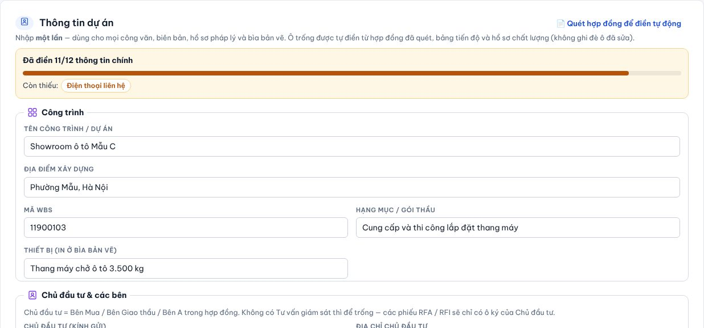
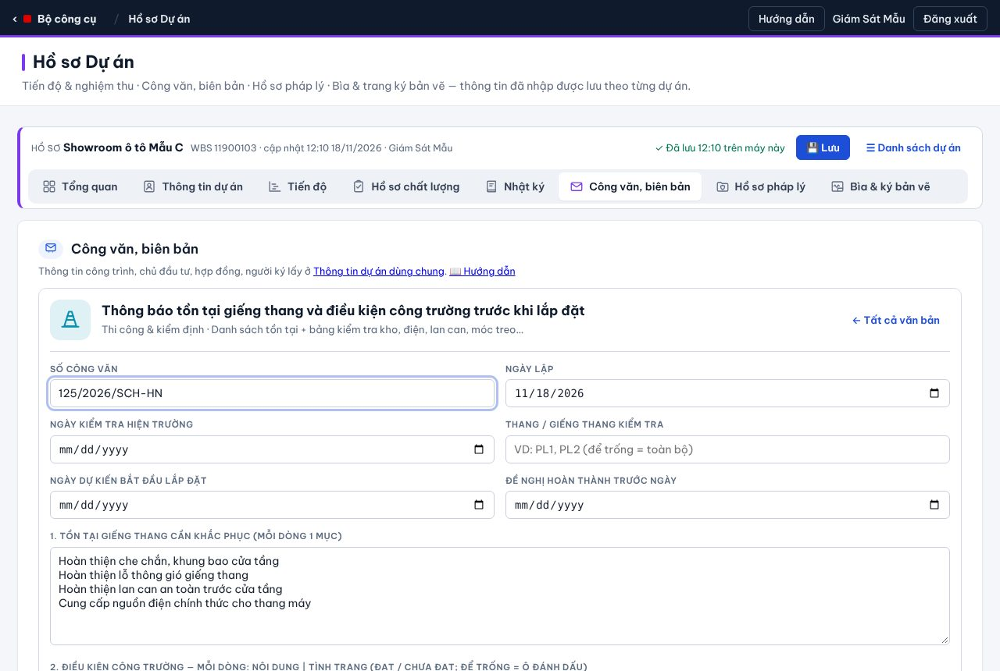
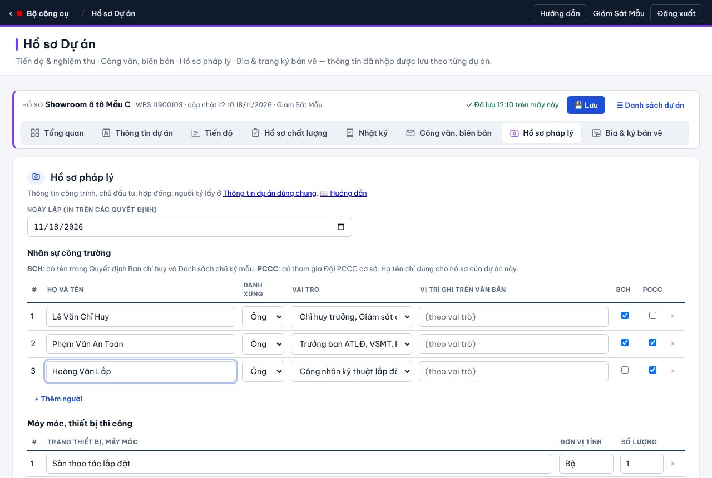
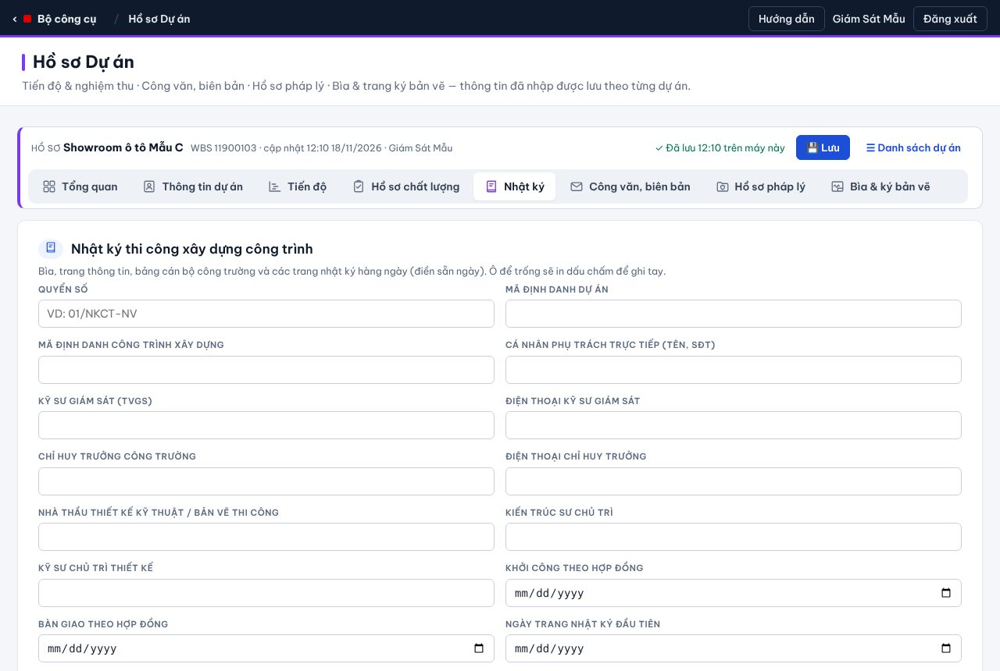
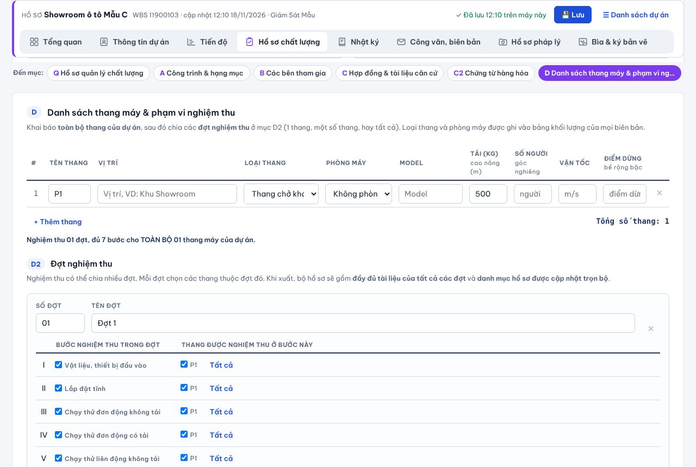

1Giám sát làm gì ở Hồ sơ Dự án
Hồ sơ Dự án gom mọi giấy tờ của một công trình vào một hồ sơ: nhập thông tin dự án một lần, sau đó bấm xuất công văn, biên bản, hồ sơ pháp lý, nhật ký, hồ sơ nghiệm thu… đã điền sẵn tên công trình, chủ đầu tư, số hợp đồng, người ký. Giám sát là người dùng nhiều nhất vì phần lớn văn bản phát sinh ở công trường.
| Việc | Giám sát (Site Sup) |
|---|---|
| Tạo hồ sơ dự án mới | ✅ Được — mỗi WBS chỉ 1 hồ sơ. Tạo trùng thì app mời mở hồ sơ cũ. |
| Sửa hồ sơ | ✅ Hồ sơ mình tạo. Hồ sơ người khác tạo: chỉ xem — nhờ Admin bấm Quyền sửa để cấp. |
| Xuất văn bản (Word / PDF / Excel) | ✅ Mọi hồ sơ — kể cả hồ sơ chỉ xem. |
| Xoá hồ sơ | Chỉ hồ sơ mình tạo (Admin xoá được mọi hồ sơ). |
2Bắt đầu một dự án (10 phút)
- Trang chủ Bộ công cụ → Hồ sơ Dự án. Gõ tên / WBS vào ô Tìm dự án. Đã có → Mở. Chưa có → ＋ Tạo hồ sơ dự án mới.
- Quét hợp đồng: kéo thả file hợp đồng (PDF, Word, Excel hoặc ảnh). App tự nhận chủ đầu tư (Bên Mua / Bên Giao thầu / Bên A), số và ngày hợp đồng, thiết bị… Không có file → Bỏ qua — nhập tay.
- App mở tab Thông tin dự án. Kiểm tra và điền đủ — đây là nguồn duy nhất cho mọi văn bản.
- Bấm 💾 Lưu (cần có Tên công trình). App còn tự lưu 5 phút một lần, khi chuyển tab và sau mỗi lần xuất file.

Checklist thông tin dự án — giám sát phải kiểm tra
- Tên công trình, địa điểm — đúng như hợp đồng (in ở mọi văn bản).
- Chủ đầu tư và địa chỉ — người nhận “Kính gửi”. Hợp đồng thầu phụ: chủ đầu tư là Bên Giao thầu (thường là tổng thầu).
- Ban QLDA, Tư vấn giám sát — in ở dòng “Đồng kính gửi”. Dự án không có TVGS thì để trống: phiếu RFA / RFI tự chỉ còn ô ký của Chủ đầu tư.
- Số hợp đồng, ngày ký — in ở dòng “Tham chiếu”.
- Người ký công văn, chức vụ — người ký thực tế (thường Trưởng phòng / Quản lý dự án).
- Chỉ huy trưởng công trường — dùng cho hồ sơ pháp lý và nhật ký.
- Người liên hệ + điện thoại — in cuối công văn để khách gọi. Thường là giám sát hoặc QLDA.

3Lộ trình 5 giai đoạn
Mỗi giai đoạn có vài văn bản cần làm. Bấm vào ô để xem chi tiết. Tên văn bản dưới đây trùng với thẻ trong tab Công văn, biên bản (gõ vào ô tìm kiếm để ra ngay).
| Giai đoạn | Văn bản / file trong app | Gửi / ký |
|---|---|---|
| 1. Trước khi hàng về | CV Thư xác nhận ngày giao vật tư · CV Thông báo hàng về lần 1 (trước 30 ngày) · CV lần 2 (trước 1 tuần) · CV Tồn tại giếng thang trước khi hàng về · BB BB xác nhận thiết bị đến công trường | Chủ đầu tư; đồng gửi Ban QLDA / TVGS |
| 2. Trước khi lắp đặt | CV Tồn tại giếng thang & điều kiện công trường · FILE Hồ sơ pháp lý (.zip 8 văn bản) · FILE Nhật ký thi công · PHIẾU RFA trình bản vẽ / biện pháp · FILE Bìa & trang ký bản vẽ thi công | CĐT / TVGS duyệt RFA; ký nhật ký hằng ngày |
| 3. Trong thi công | PHIẾU RFI khi cần làm rõ · CV Báo giá phát sinh (phối hợp QLDA) · CV Bảo quản tài sản khi tạm dừng · cập nhật tiến độ (Gantt) | CĐT xác nhận |
| 4. Kiểm định & nghiệm thu | CV Tồn tại trước kiểm định · CV Thư mời kiểm định · BB BB nghiệm thu cote cửa tầng · FILE Hồ sơ chất lượng (theo đợt) · CV Thông báo kết quả nghiệm thu · FILE Bìa & trang ký bản vẽ hoàn công | CĐT, TVGS, đơn vị kiểm định |
| 5. Bàn giao & bảo hành | CV Thông báo bàn giao · BB BB bàn giao thang (song ngữ) · BB BB huấn luyện & bàn giao chìa khoá · CV Thời hạn bảo hành, bảo trì · CV Cách tính thời gian bảo hành | CĐT ký nhận |
4Giai đoạn 1 — Trước khi hàng về
Mục tiêu: chủ đầu tư biết ngày hàng về, chuẩn bị mặt bằng lưu kho và hoàn thiện giếng thang đúng hạn.
- Khi nhà máy xác nhận ngày giao → CV Thư xác nhận ngày giao vật tư thang máy về công trường. Ngày hàng về và hạn mặt bằng tự lấy từ bảng tiến độ; kiểm tra số thang, cảng nhập. Thư có ô Khách hàng xác nhận — nhớ thu lại bản đã ký.
- Trước 30 ngày → CV Thông báo hàng về — lần 1. Trước 1 tuần → CV lần 2 (ngày giao, kho bãi, đường vận chuyển).
- Đi khảo sát giếng thang → CV Tồn tại giếng thang trước khi hàng về: ghi ngày khảo sát, mỗi tồn tại một dòng, hạn hoàn thành.
- Ngày hàng đến → BB BB xác nhận thiết bị đến công trường (thẻ có ghi “↓ mẫu ở khung bên dưới”). Số C/O, C/Q, Packing List, vận đơn lấy ở Hồ sơ chất lượng → mục C2 — có thể quét file chứng từ để điền tự động.
5Giai đoạn 2 — Trước khi lắp đặt
5.1 Điều kiện công trường
CV Thông báo tồn tại giếng thang & điều kiện công trường trước khi lắp đặt: phần 1 liệt kê tồn tại giếng thang; phần 2 là bảng kiểm tra 9 điều kiện có sẵn (kho, đường vận chuyển, điện thi công, chiếu sáng, lan can cửa tầng, móc treo, đáy hố, mốc cao độ, điều kiện cho công nhân).
- Mỗi dòng ghi
nội dung | tình trạng: ghi Đạt → in ✔; Chưa đạt → in ✘ đậm; để trống → in ô ☐ Đạt ☐ Chưa đạt để đánh dấu tay tại hiện trường. - Ghi rõ ngày dự kiến lắp đặt và hạn hoàn thành — chậm thì tiến độ được điều chỉnh theo hợp đồng.

5.2 Hồ sơ pháp lý — nộp trước khi vào thi công
- Tab Hồ sơ pháp lý → nhập nhân sự công trường: họ tên, vai trò, tick BCH (Ban chỉ huy) và PCCC.
- Kiểm tra danh sách máy móc (có sẵn 13 thiết bị, sửa được).
- ⬇ Xuất bộ hồ sơ pháp lý → file .zip 8 văn bản: bìa, danh mục, QĐ Ban chỉ huy, trách nhiệm, chữ ký mẫu, đội PCCC, sơ đồ tổ chức, máy móc.
- Kế hoạch an toàn có sẵn của công ty: dùng mục đổi tên công trình (tải file Word cũ lên, app thay tên công trình mới).

5.3 Nhật ký thi công
Tab Nhật ký: điền quyển số, mã định danh, kỹ sư giám sát (TVGS), chỉ huy trưởng, ngày khởi công / bàn giao, ngày trang đầu tiên và số trang → xuất Word, các trang nhật ký hằng ngày đã in sẵn ngày. Ô trống in dấu chấm để ghi tay.

5.4 Trình duyệt bản vẽ, biện pháp — RFA
- PHIẾU RFA — Đề xuất phê duyệt: chọn loại hồ sơ (bản vẽ thi công, vật tư, biện pháp, tiến độ, mẫu, catalogue), mục đích, hạn phản hồi; liệt kê tài liệu kèm theo (mỗi dòng: số hiệu | tên | phiên bản | số bản).
- Bên duyệt: Chủ đầu tư (không có TVGS) hoặc TVGS + Chủ đầu tư. Phiếu có ô kết quả A–D để bên duyệt đánh dấu.
- Bị trả về C – Sửa và trình lại: tạo lần trình mới (Rev.01) và ghi số RFA được thay thế.
- Kèm theo bộ bản vẽ: tab Bìa & ký bản vẽ → Bản vẽ thi công, tải các file PDF → app ghép A3, lập danh mục, tạo bìa và trang ký.
6Giai đoạn 3 — Trong thi công
| Tình huống ở công trường | Làm gì trong app |
|---|---|
| Bản vẽ chưa rõ: cao độ sàn, vị trí nguồn điện, kích thước lỗ chờ… | PHIẾU RFI: mỗi câu hỏi một dòng (tự đánh số), ghi đề xuất của nhà thầu và ảnh hưởng nếu trả lời chậm (tiến độ / chi phí). Đặt hạn trả lời. |
| Chủ đầu tư yêu cầu làm thêm ngoài hợp đồng | Báo QLDA. CV Báo giá công việc phát sinh: mỗi hạng mục một dòng nội dung | ĐVT | SL | đơn giá → app tự tính tổng, VAT, bằng chữ; điền thời gian thực hiện, hiệu lực, các đợt thanh toán. Không gửi khi QLDA chưa duyệt giá. |
| Công trường tạm dừng (chờ mặt bằng, chờ thanh toán…) | CV Bảo quản tài sản khi tạm dừng — chuyển trách nhiệm bảo quản thiết bị đã lắp. |
| Tiến độ thay đổi | Báo QLDA. Tab Tiến độ → bước 3: kéo thanh trên Gantt để dời ngày, kéo mép phải để đổi số ngày; việc có ô ↳ tự dời theo. Xuất lại Excel gửi khách khi QLDA đồng ý. |

7Giai đoạn 4 — Kiểm định & nghiệm thu
- Kiểm tra hiện trạng giếng thang → CV Tồn tại giếng thang trước kiểm định (ngày kiểm tra, tồn tại, hạn hoàn thành, ngày kiểm định dự kiến).
- BB BB nghiệm thu cote cửa tầng tại hiện trường cùng TVGS / CĐT.
- CV Thư mời kiểm định: thang, giờ, ngày, đơn vị kiểm định.
- Tab Hồ sơ chất lượng → bộ hồ sơ nghiệm thu (Word). Dùng dòng Đến mục ở đầu trang để nhảy nhanh:
- B — Các bên tham gia và người ký từng bên.
- C2 — Chứng từ hàng hoá (C/O, C/Q, Packing List, vận đơn).
- D — Danh sách thang (model, tải trọng, tốc độ, điểm dừng…). D2 — chia đợt nghiệm thu. D3 — hạng mục khác (đà thép, phát sinh…).
- Có kết quả → CV Thông báo kết quả nghiệm thu. Bản vẽ hoàn công: tab Bìa & ký bản vẽ → Bản vẽ hoàn công.

8Giai đoạn 5 — Bàn giao & bảo hành
- CV Thông báo bàn giao thang máy — đề nghị CĐT nhận bàn giao, đưa vào sử dụng.
- BB BB bàn giao thang máy (song ngữ) — mỗi thang 1 biên bản, nhiều thang tải về 1 file .zip. Thông tin Bên Mua / Bên Bán (mục B2) lấy từ tab Thông tin dự án.
- BB BB huấn luyện sử dụng, cứu hộ & bàn giao chìa khoá — ghi đủ người được huấn luyện và số chìa khoá.
- CV Thời hạn bảo hành, bảo trì và CV Cách tính thời gian bảo hành — nhất là khi CĐT chưa nhận bàn giao nhưng đã dùng thang.
9Quy tắc chung
| Quy tắc | Chi tiết |
|---|---|
| Số hiệu văn bản | Ghi đúng số theo sổ công văn, VD 125/2026/SCH-HN. Đã xuất văn bản trước đó thì dưới ô số có nút ↳ Dùng số tiếp theo. Công văn chung 1 dãy số; biên bản 1 dãy; RFA, RFI mỗi loại 1 dãy (VD RFA-SCH-001). Để trống → in “……/……” để ghi tay. |
| Cùng một khuôn | Mọi công văn có: Số, ngày, Kính gửi, Đồng kính gửi, V/v, Tham chiếu hợp đồng, khối ký “TM.”, Nơi nhận, người liên hệ. Không sửa khuôn trong Word — sửa ở tab Thông tin dự án rồi xuất lại. |
| Ô để trống | In “……” để điền tay sau khi in — không bao giờ in sai thông tin. |
| Ký, đóng dấu | File Word chỉ là bản soạn. In → kiểm tra → trình người ký → đóng dấu → chụp / scan lưu lại. |
| Lưu | Tự lưu 5 phút, khi chuyển tab và sau khi xuất. Mất mạng vẫn giữ nháp trên máy; mở lại app sẽ hỏi khôi phục. |
| Tên file | CV <số> - <tên văn bản> - <công trình>.docx — giữ nguyên tên khi gửi email để dễ tra lại. |
10Lỗi hay gặp
| Hiện tượng | Cách xử lý |
|---|---|
| Văn bản in sai / thiếu tên chủ đầu tư, số hợp đồng | Sửa ở tab Thông tin dự án rồi xuất lại. Ô có 🔗 ở chức năng khác không sửa trực tiếp được — bấm vào để về ô gốc. |
| Hồ sơ hiện chỉ xem | Hồ sơ do người khác tạo — vẫn xuất được. Muốn sửa: nhờ Admin cấp quyền. |
| Không lưu được | Cần có Tên công trình. Mất mạng: dữ liệu vẫn giữ trên máy, có mạng bấm 💾 Lưu. |
| Phiếu RFA có ô ký TVGS dù dự án không có TVGS | Xoá tên TVGS ở tab Thông tin dự án, hoặc chọn Bên duyệt = Chủ đầu tư trong phiếu. |
| Ngày hàng về trong thư không đúng | Sửa tiến độ (Gantt) trước — thư lấy ngày theo bảng tiến độ; hoặc sửa trực tiếp ô ngày trong form thư. |
| Quét hợp đồng nhận sai chủ đầu tư | Sửa tay ở tab Thông tin dự án. Chủ đầu tư = Bên Mua / Bên Giao thầu / Bên A. |
| Giao diện cũ sau khi app cập nhật | Tải lại trang (Ctrl+F5). |
11Thực hành & kiểm tra
Bài thực hành (30 phút, chế độ Demo — không ảnh hưởng dữ liệu thật)
- Trang chủ → 🧪 Chạy thử (Demo) ở chân trang → chọn vai Site Sup → mở Hồ sơ Dự án → ＋ Tạo hồ sơ dự án mới → Bỏ qua — nhập tay.
- Điền tab Thông tin dự án đến khi thanh hiện ✓ Đã đủ thông tin chính. Lưu.
- Tiến độ: lập bảng, sang bước 3, kéo thanh “Lắp đặt bracket” sang phải 1 tuần — quan sát tổng số ngày thay đổi.
- Công văn: xuất Thư xác nhận ngày giao vật tư số
101/2026/SCH-HN, rồi mở Thông báo hàng về lần 1 và bấm Dùng số tiếp theo. - Xuất Tồn tại giếng thang & điều kiện công trường: 2 dòng “Đạt”, 1 dòng “Chưa đạt”, còn lại để trống.
- Xuất RFA trình bản vẽ thi công, bên duyệt = Chủ đầu tư; xuất RFI hỏi cao độ sàn tầng 1.
- Hồ sơ pháp lý: 3 người (1 chỉ huy trưởng BCH + PCCC) → xuất .zip.
- Quay lại Tổng quan: kiểm tra các thẻ đã chuyển sang ✓.
10 câu kiểm tra
- Sửa tên chủ đầu tư ở đâu để mọi văn bản cùng đổi?
Đáp án
Tab Thông tin dự án (ô Chủ đầu tư). Ô có 🔗 ở nơi khác chỉ hiển thị.
- Hợp đồng thầu phụ ghi “Bên Giao thầu: Công ty X”. Chủ đầu tư nhập là ai?
Đáp án
Công ty X — chủ đầu tư = Bên Mua / Bên Giao thầu / Bên A.
- Dự án không có TVGS thì phiếu RFA thế nào?
Đáp án
Để trống TVGS hoặc chọn Bên duyệt = Chủ đầu tư — phiếu chỉ còn ô ký Chủ đầu tư.
- Thông báo hàng về lần 1 gửi khi nào?
Đáp án
Trước ngày hàng về khoảng 30 ngày; lần 2 trước 1 tuần.
- Số C/O, C/Q trong BB hàng về lấy từ đâu?
Đáp án
Hồ sơ chất lượng → mục C2 Chứng từ hàng hoá (quét file hoặc nhập tay).
- Ở bảng điều kiện công trường, muốn in ô để đánh dấu tay thì ghi gì?
Đáp án
Để trống phần tình trạng (sau dấu |).
- Bản vẽ chưa rõ cao độ sàn — dùng văn bản nào?
Đáp án
RFI — Phiếu yêu cầu cung cấp thông tin.
- CĐT yêu cầu làm thêm, giám sát có được tự gửi báo giá phát sinh?
Đáp án
Không — báo QLDA, chỉ gửi khi QLDA đã duyệt giá.
- Hồ sơ hiện “chỉ xem” — có xuất được văn bản không?
Đáp án
Có. Muốn sửa thì nhờ Admin cấp quyền.
- Làm sao biết dự án còn thiếu hồ sơ nào?
Đáp án
Tab Tổng quan: thẻ “Chưa xuất” là còn thiếu; thanh “Đã điền x/12” cho thông tin dự án.
Đáp án
- Tab Thông tin dự án (ô Chủ đầu tư). Ô có 🔗 ở nơi khác chỉ hiển thị.
- Công ty X — chủ đầu tư = Bên Mua / Bên Giao thầu / Bên A.
- Để trống TVGS hoặc chọn Bên duyệt = Chủ đầu tư — phiếu chỉ còn ô ký Chủ đầu tư.
- Trước ngày hàng về khoảng 30 ngày; lần 2 trước 1 tuần.
- Hồ sơ chất lượng → mục C2 Chứng từ hàng hoá (quét file hoặc nhập tay).
- Để trống phần tình trạng (sau dấu |).
- RFI — Phiếu yêu cầu cung cấp thông tin.
- Không — báo QLDA, chỉ gửi khi QLDA đã duyệt giá.
- Có. Muốn sửa thì nhờ Admin cấp quyền.
- Tab Tổng quan: thẻ “Chưa xuất” là còn thiếu; thanh “Đã điền x/12” cho thông tin dự án.